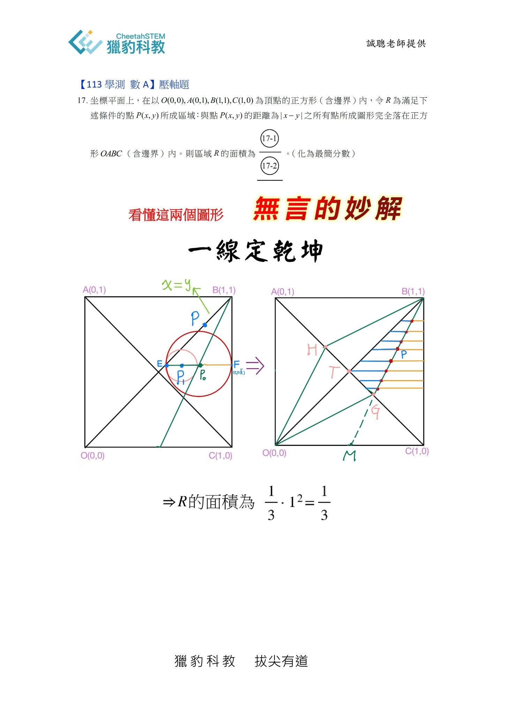
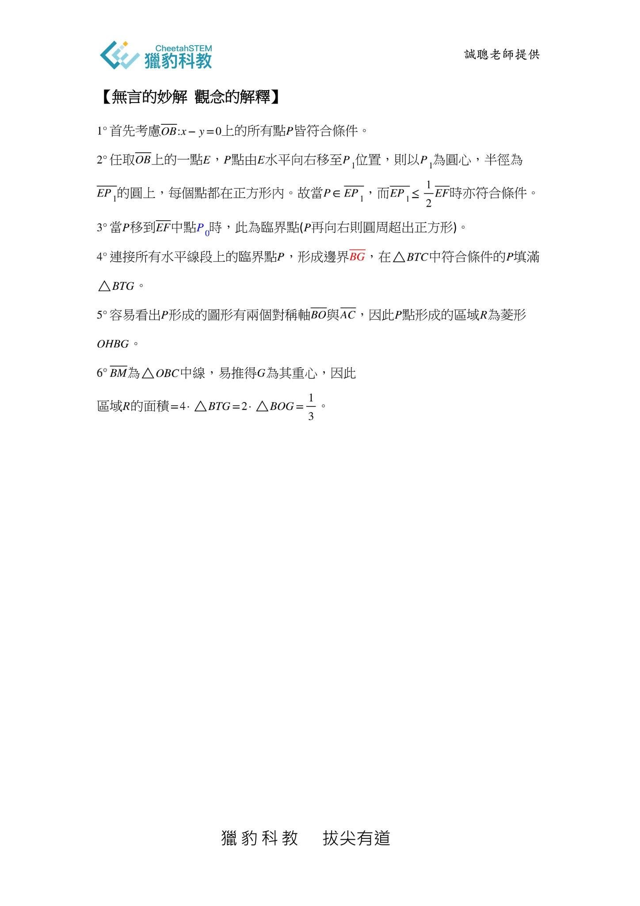

113年學測 數學科的壓軸題P17
獵豹提供了「看圖說故事」式無言的妙解！
同學們可以試試看，參透第一張海報的兩個圖便瞬間看出答案。（第二頁海報解釋了這兩個圖的原理）
運用之妙，存乎一心 ，BG線段 一線定乾坤‼️
宗翰老師將錄製一段教學影片，示範透過獵豹的教材獲得此題的巧解，星媽也以文科媽媽的逆襲，製作了GGB課件與動畫影
片。
敬請期待，歡迎大家索取！
✅索取宗翰老師解說影片方式:
原活動文:別人兩頁 獵豹一行‼️
3. 完成google表單填寫並告知星媽
4. 進line群等候本週末發布影片

